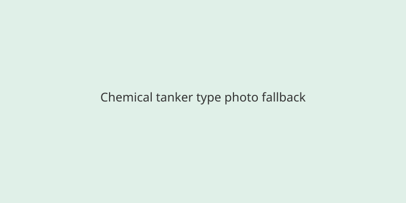

Ibiza · marítimo · 26 de noviembre de 2026
El buque tanque Med Emre, con bandera de Malta y carga de gasóleo, se volcó cerca de Ibiza; un tripulante falleció.

Lo que coinciden las redacciones
El buque tanque químico Med Emre, con bandera de Malta y unos 120 metros de eslora, transportaba hasta 7.000 toneladas métricas de gasóleo (aproximadamente 1,2 millones de litros según algunas fuentes) desde Algeciras hacia Barcelona. La noche del 25 de noviembre comunicó una vía de agua alrededor de las 21:36 y una escora importante. Hacia las 23:00 se volcó o se hundió parcialmente a unas 25-30 millas náuticas (alrededor de 40-55 km) al norte de Ibiza. Los 17 tripulantes fueron rescatados por Salvamento Marítimo y unidades de la Armada. Uno falleció posteriormente en el hospital Can Misses de Ibiza; otros seis sufrieron heridas leves, principalmente por hipotermia. España activó el nivel 2 del Plan Nacional de Contingencia por Contaminación Marítima Accidental. Hasta el momento de estas líneas no se ha confirmado de forma independiente un vertido de gasóleo; la evaluación de Salvamento Marítimo continúa y el clima ha retrasado las operaciones de inspección y salvamento.
BBC, Reuters y Europa Press coinciden en la bandera, la carga aproximada, la ubicación, el número de tripulantes y el balance de una víctima mortal. El buque había sido construido en 2019. Las autoridades españolas han movilizado medios aéreos y marítimos para vigilar posibles manchas y evaluar el estado del casco.
Lo que es solo una cita
Fuentes oficiales han dicho que «no se ha detectado contaminación por el momento». Esa afirmación describe el estado de las observaciones hasta ahora, no un resultado final de muestreo de agua o sedimentos. Declaraciones sobre la causa exacta de la vía de agua (posible fallo estructural, error de navegación o condición meteorológica) siguen siendo hipótesis hasta que se complete la investigación. Cualquier estimación de la cantidad de gasóleo que pueda haber escapado es, en este momento, una proyección, no una medición.
Mecanismo e historia que el lector necesita
Un buque tanque químico o de productos petrolíferos transporta carga líquida en tanques. Una vía de agua en el casco puede producir escora rápida si entra agua en compartimentos no previstos. El Med Emre escoró de forma pronunciada (algunas informaciones hablan de cerca de 90 grados) antes de volcar. El rescate se produjo de noche y en condiciones de viento y mar que complicaron las operaciones. El nivel 2 del plan nacional implica coordinación entre Salvamento Marítimo, Capitanía Marítima, Guardia Civil del Mar y, si es necesario, medios del Ministerio de Transición Ecológica para contención de posibles vertidos. El gasóleo flota en superficie y puede formar manchas que afectan a fauna marina y costas si no se contiene; por eso la vigilancia aérea y de superficie es prioritaria incluso cuando aún no se ha confirmado una fuga.
Ibiza y Formentera forman parte de una zona de alto valor ecológico y turístico. Un vertido cerca de sus costas activaría protocolos de protección de playas y de la Reserva Marina. Hasta ahora las autoridades no han ordenado restricciones de baño o pesca porque no hay confirmación de mancha. El clima posterior al suceso ha retrasado la llegada de buques de salvamento especializados y de equipos de inspección submarina. La bandera de Malta implica que la investigación formal del accidente corresponderá en primera instancia a las autoridades maltesas, con cooperación de España por la ubicación.
El volumen de 7.000 toneladas es significativo pero no excepcional para un buque de ese porte. La diferencia entre «capacidad máxima» y carga real en el momento del suceso aún no ha sido precisada de forma pública por todas las fuentes. Esa distinción importa para calcular el peor escenario de vertido.
Lo que la historia no es
No es la confirmación de un vertido masivo. No es una conclusión sobre la causa del accidente. No es una noticia sobre la campaña electoral española del 29 de noviembre. La fotografía superior es de tipo: un buque tanque químico similar en aspecto general, no el Med Emre ni el lugar del hundimiento.

Contexto adicional: Salvamento Marítimo mantiene una zona de exclusión temporal alrededor de la posición del buque. Unidades aéreas sobrevuelan la zona en busca de irisaciones o manchas. El hospital Can Misses confirmó el fallecimiento de un tripulante; los demás heridos recibieron atención por hipotermia y fueron dados de alta o permanecen en observación según su estado. La naviera y el armador no han emitido, en el momento de estas líneas, un comunicado público detallado más allá de la cooperación con las autoridades. La investigación técnica del casco y de los tanques tendrá que esperar a que mejoren las condiciones meteorológicas y se pueda acceder de forma segura al pecio.
El Mediterráneo occidental registra cada año varios incidentes con buques de carga. La mayoría no producen contaminación significativa cuando la respuesta es rápida y la carga permanece contenida. El caso del Med Emre se distingue por la combinación de escora rápida, una víctima mortal y la proximidad a una isla densamente visitada. Las próximas 48-72 horas de vigilancia aérea y de muestreo de agua determinarán si el incidente permanece como un accidente de navegación con pérdida de un tripulante o si pasa a ser también un evento de contaminación.
Artículos de origen y puntuaciones
Imágenes: fotografía de tipo de Wikimedia Commons de un buque tanque químico (no el suceso) enlazada por Special:FilePath. Los pies indican que no es el buque del evento. onerror apunta al SVG local. Sin atributo crossorigin.